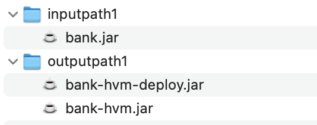

HVM ABI插件使用手册¶
概述¶
HVM提供了一种maven插件hvm-abi，插件目前包含以下功能：
ABI生成：插件可以生成HVM合约的ABI文件。用户可以通过ABI在SDK中生成合约执行的payload，进行合约的调用。
字节码增强：对原始hvm合约的字节码进行增强处理，从而让合约中的storefield实现懒加载功能（指当合约执行过程中使用到某个storefield时，hvm执行引擎会从账本中读取数据），提高合约直接调用的性能。
hvm-abi获取¶
目前hvm-abi并没有发布到公共maven仓库中，如果需要使用有以下两种方法：
联系基础平台部的运维人员获取hvm-abi的jar包，放入到本地的maven仓库中
如果在趣链内网环境下，可以在内网中的maven仓库获取。
1. 使用hvm-abi插件生成abi文件¶
用户可以在自己的HVM合约项目的pom.xml文件中加入， 其中configuration的部分需要根据合约实际情况进行修改 。
<plugin> <groupId>cn.hyperchain.hvm</groupId> <artifactId>hvm-maven-plugin</artifactId> <version>0.0.6</version> <!-- configuration内容请根据实际情况进行修改 --> <configuration> <!-- <jarFile> hvm合约的jar包路径 --> <jarFile>${project.basedir}/target/share-1.0.jar</jarFile> <!-- <invokeBeanPath> hvm合约的class字节码文件夹路径 --> <invokeBeanPath>${project.basedir}/target/classes</invokeBeanPath> <!-- <invokeBeanPackages>中包含很多<param>标签，每个<param>标签中都是一个实现BaseInvoke接口的类的全限定名 --> <invokeBeanPackages> <!--<param>com.hyperchain.invoke.ShareInvoke</param>--> <!--<param>com.hyperchain.invoke.ShareInvoke</param>--> </invokeBeanPackages> <!--<outputFile>中存放的是生成的.abi的存放目录--> <outputFile>${project.basedir}/target/hvm.abi</outputFile> </configuration> </plugin>
其中
<jarFile> 中是hvm合约的jar包路径
<invokeBeanPath> 是hvm合约的class字节码文件夹路径
<invokeBeanPackages>中包含很多<param>标签，每个<param>标签中都是一个实现 BaseInvoke 接口的类的全限定名。
<outputFile>中存放的是生成的.abi的存放目录
在生成合约jar文件后，执行以下命令可以生成hvm.abi文件。
mvn hvm:abi
abi文件格式¶
HVM目前提供两种合约调用的方式：通过invokeBean和直接调用，abi文件通过一种 BeanAbi 的类型保存调用所需的基本信息：
invokeBean：扫描<invokeBeanPackages>中所有的类文件，每一个invokeBean对应一个 BeanAbi 。
直接调用：扫描合约体的 除构造方法和钩子方法以外的 public 方法 ，每一个方法对应一个 BeanAbi 。
entry¶
hvm.abi中通过一个 entry 的结构体表示一个变量，其结构如下：
name： 变量名称
type：变量类型
structname：如果变量是结构体则代表结构体类的名称
properties：是一个entry数组，与type有关：
Map：长度为2，分别表示key和value的变量类型信息；
List：长度为1，表示元素的变量类型信息；
基础类型：为空
结构体：表示该结构体各字段变量类型信息；
BeanAbi¶
hvm.abi中以json的形式保存了一个 BeanAbi 类型的数组，BeanAbi包含的参数如下：
version：hvm.abi的版本
beanName：实现*BaseInvoke*接口的类的名称
inputs：invoke方法的参数，是一个entry数组
output：invoke方法的返回值，为entry类型
structs：HVM合约中的结构体，是一个entry数组
beanType：表示beanAbi的类型，有 InvokeBean 和 MethodBean 两种类型
InvokeBean：以InvokeBean的形式调用合约
MethodBean：以DirectlyInvoke的形式调用合约
classBytes：invokeBean的字节码， 是 **InvokeBean** 类型特有的参数
hvm.abi的示例可以在 demo实例 小节中查看。
gosdk使用abi文件¶
本节将介绍如何在gosdk中通过abi文件调用hvm合约。
部署hvm合约¶
读取jar文件
gosdk中提供了hvm.ReadJar()函数来读取jar文件:
jarPath := "/path/to/AbiDemo-1.0-SNAPSHOT.jar"
payload, _ := hvm.ReadJar(jarPath)
部署合约
将从jar文件读取的内容作为payload，通过交易进行合约部署:
transaction := rpc.NewTransaction(ecKey.GetAddress().Hex()).
Deploy(payload).
VMType(rpc.HVM)
transaction.Sign(ecKey)
receipt, err := hrpc.DeployContract(transaction)
获取指定方法/InvokeBean的abi¶
将abi的json数据读到abiJson中，通过GenAbi获取abi实例:
abiPath := "/path/to/hvm.abi"
abiJson, _ := common.ReadFileAsString(abiPath)
abi, _ := hvm.GenAbi(abiJson)
在gosdk中给abi提供了以下两个函数：
GetBeanAbi
func (abi Abi) GetBeanAbi(beanName string) (*BeanAbi, error)
查找abi中符合beanName且 beanType 为 InvokeBean 类型 的BeanAbi，返回的BeanAbi唯一。
GetMethodAbi
func (abi Abi) GetMethodAbi(methodName string) (*BeanAbi, error)
根据方法的名称返回 MethodBean 类型 的 BeanAbi 。考虑到Java中的方法存在重载的情况，Java的方法重载具有以下特点：在同一个类中， 允许存在一个以上的同名方法， 只要它们的 参数个数或者参数类型不同 即可， 与返回值无关 。
因此，我们对methodName进行以下规定：
格式 |
描述 |
示例 |
|---|---|---|
name |
通过方 法名进行查询，返回第一个na me符合的BeanAbi。若存在重载 方法，不建议使用这种方式。 |
abi.GetMethodAbi(”Hello“) |
name (params) |
通过方法名和参 数类型进行查询，参数类型对 应abi中input的参数structNa me，两个参数之间通过,分隔。 能够准确查询到方法名和参数 类型符合的BeanAbi。若存在重 载方法，建议使用这种方式。 |
abi.GetMethodAbi(“Hello ()”)abi.GetMethodAbi(“Hello (java.lang.String)”)abi.Get MethodAbi(“Hello(int;int)”) |
通过BeanAbi生成payload¶
在我们获得了 BeanAbi 以后，我们可以通过 GenPayload 函数构造对应的payload，需要传入 BeanAbi 以及对应的参数params（ 要求与 BeanAbi 的Inputs参数个数和类型一致 ）。
func GenPayload(beanAbi *BeanAbi, params ...interface{}) ([]byte, error)
我们对传入的params参数做了以下规定：
基本类型数据：传入这个参数的字符串形式。如对于 int 6 ，传入 ”6” 这个字符串。
list类型和Array类型：传入interface数组。如对于List<String>，我们传入
[]interface{}{"strList1", "strList2"}
map类型：传入interface数组。如对于map<String,Bean>，我们传入
[]interface{}{[]interface{}{"bean1", bean1}, []interface{}{"bean2", bean2}}
具体表格如下：
类 型 |
写法1 |
写法2(json格式) |
|---|---|---|
Bool |
“true” |
“true” |
Char |
“c” |
“c” |
Short |
“20” |
“20” |
Int |
“20” |
“20” |
Float |
“1.1” |
“1.1” |
Double |
“1.11” |
“1.11” |
Byte |
“1” |
“1” |
Long |
“10000000000” |
“10000000000” |
List |
[]interface{}{“strList1”, “strList2”} |
|
Map |
[]interf ace{}{[]interface{}{“bean1”, bean1}, []interface{}{“bean2”, bean2}} |
|
Struct |
bean1 := []interface{}{“hvm-bean1”, person} （其中person是基本类型） |
|
Array |
array1 = []interface{}{“strList1”, “strList2”} |
|
此外，gosdk中还提供了一种hvm.Convert()方法，将go支持的type（如map，list）转成上面这个表格所示的[]interface{}
fcmap := make(map[string]map[string]string) fcmap["789"] = make(map[string]string) fcmap["234"] = make(map[string]string) fcmap["789"]["456"] = "12.2" fcmap["234"]["345"] = "12.2" // ans 的值为 []interface{}{[]interface{}{"789",[]interface{}{[]interface{}{"456","12.2"}}}, []interface{}{"234",[]interface{}{[]interface{}{"345","12.2"}}}}, ans := hvm.Convert(fcmap)
demo实例¶
为了更好地帮助用户理解abi的使用方式，我们给出了一个demo使用实例。
合约代码¶
下面的代码给出了用于演示的合约，主要功能为在日志中打印传入的参数。
public class SimpleInvokeContract extends BaseContract implements ISimpleInvokeContract { public Logger logger = Logger.getLogger(SimpleInvokeContract.class); @Override public void printint(int v) { logger.notice("printint: " + v); } @Override public void printInteger(Integer v) { logger.notice("printInteger: " + v); } @Override public void printIntegers(Integer[] v) { StringBuilder s = new StringBuilder(); for (Integer i : v) { s.append(i); s.append(" "); } logger.notice("printIntegers: " + s.toString()); } @Override public void printMan(Man v) { logger.notice("printShort: " + v.toString()); } @Override public void printMap(HashMap<String, Man> v) { logger.notice("printMap: " + v); } @Override public void printList(ArrayList<String> v) { logger.notice("printList: " + v); } …… }
InvokeBean调用¶
首先我们通过InvokeBean调用我们的合约，InvokeBean的代码如下:
public class IntegerInvoke implements BaseInvoke<Boolean, ISimpleInvokeContract> {
private int v1;
private Integer v2;
private Integer[] v3;
public IntegerInvoke() {
}
@Override
public Boolean invoke(ISimpleInvokeContract iSimpleInvokeContract)
{
iSimpleInvokeContract.printint(v1);
iSimpleInvokeContract.printInteger(v2);
iSimpleInvokeContract.printIntegers(v3);
return true;
}
}
该InvokeBean对应的abi数据如下:
[{
"classBytes": "cafebabe00000032003b0a000c002……",
"version": "v1",
"beanName": "org.example.invoke.IntegerInvoke",
"inputs": [{
"name": "v1",
"type": "Int",
"structName": "int"
}, {
"name": "v2",
"type": "Int",
"structName": "java.lang.Integer"
}, {
"name": "v3",
"type": "Array",
"properties": [{
"name": "java.lang.Integer",
"type": "Int",
"structName": "java.lang.Integer"
}]
}],
"output": {
"name": "java.lang.Boolean",
"type": "Bool",
"structName": "java.lang.Boolean"
},
"structs": [],
"beanType": "InvokeBean"
},
……
]
可以看出，要构造该payload，我们需要传入 int，int，int[] 类型的参数，因此在gosdk中的使用代码如下:
abiBean1, _ := abi.GetBeanAbi("org.example.invoke.IntegerInvoke")
invokePayload1, _ := hvm.GenPayload(abiBean1, "1", "2",
[]interface{}{"3", "4"})
transaction1 := rpc.NewTransaction(ecKey.GetAddress().Hex()).
Invoke(contractAddress, invokePayload1).
VMType(rpc.HVM)
transaction1.Sign(ecKey)
receipt1, _ := hrpc.InvokeContract(transaction1)
payload还可以下面的形式构造:
invokePayload1, _ := hvm.GenPayload(abiBean1, "1", "2", `["3", "4"]`)
a := []int{3, 4}
invokePayload1, _ := hvm.GenPayload(abiBean1, "1", "2", hvm.Convert(a))
调用成功后，会在平台的日志中打印以下内容:
NOTI [2020-08-27T18:52:48.514] [executor] core/logger.go:48 [SimpleInvokeContract]: printint: 1
NOTI [2020-08-27T18:52:48.515] [executor] core/logger.go:48 [SimpleInvokeContract]: printInteger: 2
NOTI [2020-08-27T18:52:48.515] [executor] core/logger.go:48 [SimpleInvokeContract]: printIntegers: 3 4
直接调用¶
直接调用与InvokeBean调用使用abi的方法类似，我们将通过直接调用的方式调用 printMan 、 printMap 、 printList 这三个方法，他们逻辑可以在前面 合约代码 处查看。
printMan
printMan 方法的abi如下:
[{
"version": "v1",
"beanName": "printMan",
"inputs": [{
"name": "org.example.bean.Man",
"type": "Struct",
"structName": "org.example.bean.Man"
}],
"output": {
"name": "void",
"type": "Void",
"structName": "void"
},
"structs": [{
"name": "org.example.bean.Man",
"type": "Struct",
"properties": [{
"name": "name",
"type": "String",
"structName": "java.lang.String"
}, {
"name": "age",
"type": "Int",
"structName": "int"
}]
}],
"beanType": "MethodBean"
},
……
]
可以看出，要构造该payload，我们需要传入 Man 类型的参数，在gosdk中的使用代码如下:
abiBean2, _ := abi.GetMethodAbi("printMan")
invokePayload2, _ := hvm.GenPayload(abiBean2,
`{"name": "Ming", "age": "20"}`)
transaction2 := rpc.NewTransaction(ecKey.GetAddress().Hex()).
Invoke(contractAddress, invokePayload2).
VMType(rpc.HVM)
transaction2.Sign(ecKey)
receipt2, _ := hrpc.InvokeContract(transaction2)
调用成功后，会在平台打印以下内容:
NOTI [2020-08-27T20:23:50.267] [executor] core/logger.go:48 [SimpleInvokeContract]: printShort: Man{name='Ming', age=20}
printMap
printMap 方法的abi如下:
[{
"version": "v1",
"beanName": "printMap",
"inputs": [{
"name": "java.util.HashMap",
"type": "Map",
"properties": [{
"name": "class java.lang.String",
"type": "String",
"structName": "class java.lang.String"
}, {
"name": "class org.example.bean.Man",
"type": "Struct",
"structName": "class org.example.bean.Man"
}]
}],
"output": {
"name": "void",
"type": "Void",
"structName": "void"
},
"structs": [{
"name": "org.example.bean.Man",
"type": "Struct",
"properties": [{
"name": "name",
"type": "String",
"structName": "java.lang.String"
}, {
"name": "age",
"type": "Int",
"structName": "int"
}]
}],
"beanType": "MethodBean"
},
……
]
相应的调用代码如下:
abiBean3, _ := abi.GetMethodAbi("printMap")
invokePayload3, _ := hvm.GenPayload(abiBean3,
`{"man1":{"name":"Ming","age":20},"man2":{"name":"Yi","age":22}}`)
transaction3 := rpc.NewTransaction(ecKey.GetAddress().Hex()).
Invoke(contractAddress, invokePayload3).
VMType(rpc.HVM)
transaction3.Sign(ecKey)
receipt3, _ := hrpc.InvokeContract(transaction3)
调用成功后，会在平台打印以下内容:
NOTI [2020-08-27T21:00:17.640] [executor] core/logger.go:48 [SimpleInvokeContract]: printMap: {man2={name=Yi, age=22.0}, man1={name=Ming, age=20.0}}
printList
printList 方法abi内容如下:
[{
"version": "v1",
"beanName": "printList",
"inputs": [{
"name": "java.util.ArrayList",
"type": "List",
"properties": [{
"name": "class java.lang.String",
"type": "String",
"structName": "class java.lang.String"
}]
}],
"output": {
"name": "void",
"type": "Void",
"structName": "void"
},
"structs": [],
"beanType": "MethodBean"
},
……
]
相应的调用代码如下:
abiBean4, _ := abi.GetMethodAbi("printList")
invokePayload4, _ := hvm.GenPayload(abiBean4,
`["a", "b", "c"]`)
transaction4 := rpc.NewTransaction(ecKey.GetAddress().Hex()).
Invoke(contractAddress, invokePayload4).
VMType(rpc.HVM)
transaction4.Sign(ecKey)
receipt4, _ := hrpc.InvokeContract(transaction4)
调用成功后，会在平台打印以下内容:
NOTI [2020-08-27T21:23:18.184] [executor] core/logger.go:48 [SimpleInvokeContract]: printList: a b c
2. 使用hvm-abi对合约进行增强¶
hvm-abi插件字节码增强相关配置¶
用户可以在自己的HVM合约项目的pom.xml文件中加入以下内容。其中主要包含以下参数：
<inputPaths>：待增强合约jar文件的路径。如果传入的路径是jar文件，则会对该jar文件进行字节码增强处理；如果传入的路径是文件夹，那么会对该文件夹下所有的带有 jar 后缀的文件进行字节码增强处理。
<outputPaths>：合约增强后的jar文件的输出路径，建议输出路径是一个空的文件夹。
在插件中，可以配置多个 inputPath 和多个 outputPath ，要求配置的 inputPath 个数与 outputPath 个数相同，并且第n个 inputPath 对应第n个 outputPath 。
<plugin> <groupId>cn.hyperchain.hvm</groupId> <artifactId>hvm-maven-plugin</artifactId> <version>0.0.6</version> <configuration> <inputPaths> <inputPath> /inputpath1/ </inputPath> <inputPath> /path2/target/bank.jar </inputPath> </inputPaths> <outputPaths> <outputPath> /outputpath1 </outputPath> <outputPath> /path2/target </outputPath> </outputPaths> </configuration> </plugin>
其他插件配置说明¶
为了maven包引用不出现冲突，这里要求使用 mven-jar-plugin 的插件版本为 3.1.0 。
执行合约增强的命令¶
在完成上述配置后，在终端输入以下命令可以生成增强合约的jar文件。
mvn hvm:enhance
以对bank.jar进行增强为例，效果如下图所示，插件会对inputpath下的合约jar文件进行处理，并在outputpath路径下输出两个合约jar文件：
bank-hvm.jar：如果在客户端需要使用合约中的某些类，则可以引入这个jar包依赖。
bank-hvm-deploy.jar：在合约部署/升级时，将deploy.jar文件传到节点端进行部署/升级，该合约jar的大小相比原合约jar会稍大， 需要注意是否超过了hvm合约jar大小的最大限制 。

执行效果¶
使用hvm增强合约后，合约的部署、调用、升级、冻结等操作与原先的合约一致，使用上并不会有差异。
hvm增强合约目前在 直接调用的场景下相比原始合约有性能提升， 其提升程度取决于合约中storefield的个数以及直接调用中使用的storefield个数。合约原本storefield个数越多，被直接调用的方法。而在invokeBean调用的场景下，两者的性能一致。
配合hvmType注解元素使用¶
用户在编写HVM合约时，建议 使用StoreField注解元素hvmType。 hvmType会告知hvm执行引擎所要实例化的类型，在字节码增强的场景下，效率更高。
HVM合约中提供了HyperMap、HyperList、HyperTable、NestedMap四种账本数据结构类，用户在编写合约时需要通过以下两种方式声明字段，合约才能正常执行：
使用hvmType注解元素。推荐使用这种写法
public class MyContract extends BaseContract implements IMyContract { @StoreField public int num; @StoreField(hvmType = StoreField.TypeHyperMap) public HyperMap<String, String> hyperMap; @StoreField(hvmType = StoreField.TypeHyperList) public HyperList<String> hyperList; @StoreField(hvmType = StoreField.TypeHyperTable) public HyperTable hyperTable; @StoreField(hvmType = StoreField.TypeNestedMap) public NestedMap<String, String> nestedMap; }
声明时创建实例
public class MyContract extends BaseContract implements IMyContract { @StoreField public int num; @StoreField public HyperMap<String, String> hyperMap = new HyperMap<String, String>(); @StoreField public HyperList<String> hyperList = new HyperList<String>(); @StoreField public HyperTable hyperTable = new HyperTable(); @StoreField public NestedMap<String, String> nestedMap = new NestedMap<String, String>(); }
注意事项¶
在使用hvm字节码增强功能时，有以下几点需要注意：
如果合约存在跨合约调用， 要求两个合约都经过字节码增强 。不允许增强合约和非增强合约之间进行跨合约调用。
使用跨合约调用时，建议通过接口的形式来调用
// 正确示范 public boolean crossISetA(String a) { IBank iBank = crossCall.getCrossContract(); iBank.setA(a); return true; }
建议通过合约的钩子函数 onInit 和 onCreated 来编写合约的初始化逻辑。不建议在构造方法和类初始化方法中编写合约逻辑。
建议将StoreField声明为类实例字段
public class MyContract extends BaseContract implements IMyContract { // 建议用法 @StoreField(hvmType = StoreField.TypeHyperMap) public HyperMap<String, String> map1; // 不建议声明为static @StoreField(hvmType = StoreField.TypeHyperMap) public static HyperMap<String, String> map2; }
不建议合约引用非JDK和hvm-sdk以外包的类。如果合约中类或类实例的字段，那么合约Jar包中必须有这个类的class文件，即使用JDK和hvm-sdk包以外类并操作字段，hvm-abi将无法进行增强。